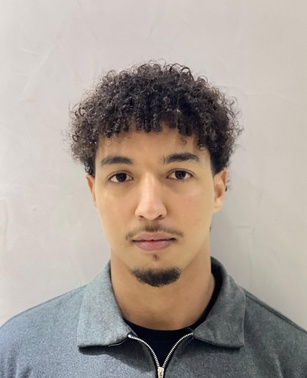

Capgemini · 2026
Desktop app · AI · Document automation
Ecotech-Hub
01Featured · Internship
Engineering student in AI & databases, between ENSAM Meknès and the Université de Bourgogne. RAG services, deep-learning pipelines and FastAPI backends, taken from an idea to a system that runs.
Work-study (alternance): available now
PFE internship: from 29 March 2027
4 months minimum, open to more
I'm a fifth-year engineering student at ENSAM Meknès, now in a Master 2 in Databases and AI at the Université de Bourgogne. I build systems end to end: RAG services over documents, deep-learning models on industrial signals and route-optimisation platforms, all behind clean FastAPI backends.

I like owning the whole path: the data and its database, the model that uses it, the API that exposes it and the interface it ships behind. What I enjoy most is building things that replace a repetitive manual process and keep running.
The tools I have shipped something end to end with. The most used ones are highlighted.
Six systems, each taken from an idea to something that runs: RAG assistants, optimisation platforms, industrial anomaly detection and reinforcement-learning agents.
06Projects
Desktop app · AI · Document automation
Generative AI · RAG · REST API
Optimisation · Web platform · Logistics
Industrial signals · Deep learning · Anomaly detection
Reinforcement learning · Vision · Agents
Predictive maintenance · Dashboard · ML
Designed and built Ecotech-Hub, a desktop application (Python, PyQt6) that uses AI to automate the processing and generation of industrial documents and presentations. Robust SQLite backends with validation scripts, and an industrialised processing chain for reliability and traceability.
Forecasting vibration levels of rotating machines: built a collection and processing chain for industrial data through I-Sense acquisition in Python, then developed predictive models (Autoencoder-Transformer, deep learning) to analyse complex signals, aimed at anomaly detection.
Master 2 at the UFR Sciences et Techniques, alongside the final year of the ENSAM engineering cycle.
Engineering cycle at the École Nationale Supérieure d'Arts et Métiers, specialised in artificial intelligence and data technologies applied to industrial systems.
Two years of integrated preparatory cycle at ENSAM, the scientific foundation of the engineering cycle.
PFE of four months minimum, open to more. Always up for a chat about LLMs, RAG or interesting ML systems. My inbox is open.